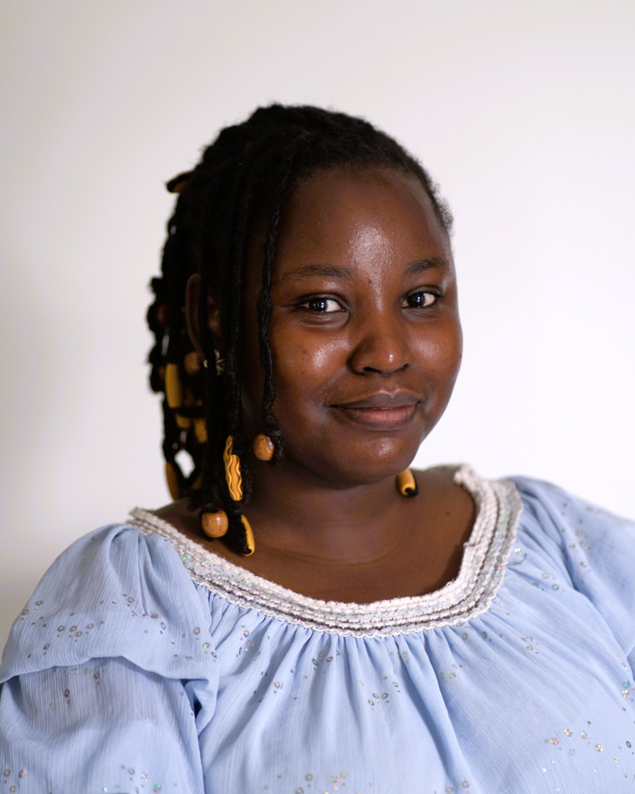

Glory K. Bagai
Mechatronics Engineering Student, RENEU Intern ’25, CaCTüS Intern ’26

Hi! I am currently a final year Mechatronics Engineering student at the Federal University of Technology, Minna, Nigeria.
I broadly work on areas where models are underutilised or inefficient, particularly for optimisation and resource constraints. I am currently a research intern at the Deep Models and Optimisation Group at the Max Planck Institute for Intelligent Systems, advised by Antonio Orvieto and Jonas Geiping. In 2025, I worked with the Jossou Research Group at the Massachusetts Institute of Technology on model compression.
My research interests centre on efficient model design and on understanding how learning systems generalise under limited computational resources. I am driven by the view that reducing resource demands makes advanced machine learning more accessible and more equitable to deploy. That means building intelligent systems that can reason and adapt efficiently in complex, dynamic environments, by integrating machine learning, deep learning and adaptive control.
In the long term, I aspire to contribute to industry research and development while also establishing my own academic lab as a principal investigator, leading innovative and inclusive research efforts.
Beyond research, I am a passionate leader and mentor dedicated to empowering girls in STEM. Through organisations such as Technovation, the WAAW Foundation and IEEE, I have facilitated programmes that have reached approximately 1,000 girls across Nigeria. I am deeply committed to advancing female STEM education across Africa. Addressing the challenges of female education in Africa is a mission I have chosen to pursue. I may not know how long it will take, or whether I will live to see its full impact, but I believe in the ripple effect: small actions can create far-reaching change. You can read more about this work on my volunteering page.
Outside of research, I enjoy reading fiction and I am currently exploring photography.
I value meaningful connections and thoughtful discussions. If you would like to collaborate or discuss research, ideas, or life in general, I would be glad to connect. Please feel free to reach out at bagaiglory@gmail.com.